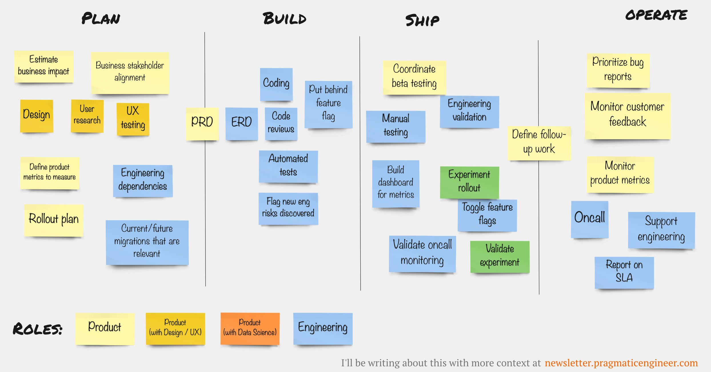

<!--
title: Development Process of Product
description: Understanding product development workflow and engineering team scaling through documentation
date: 2021-12-19
tags: development, product, engineering, documentation
author: M Yusuf
-->

<article class="blog-post">
    <h1>Development Process of Product</h1>
    <div class="meta mb-4">December 19, 2021</div>

    <div class="content">
        

        <h2>References</h2>
        <ul>
            <li><a href="https://twitter.com/GergelyOrosz/status/1468901848774066181">Gergely Orosz's Twitter Thread</a></li>
            <li><a href="https://blog.pragmaticengineer.com/scaling-engineering-teams-via-writing-things-down-rfcs/">Scaling Engineering Teams via Writing Things Down - RFCs</a></li>
        </ul>

        <div class="tags mt-4">
            <span class="badge">#Development</span>
            <span class="badge">#Product</span>
            <span class="badge">#Engineering</span>
            <span class="badge">#Documentation</span>
        </div>
    </div>
</article>
